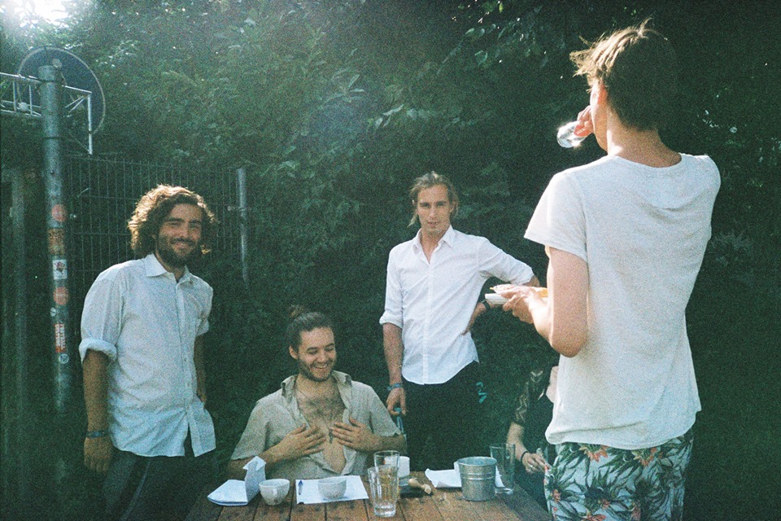

Kamermuziek begon vroeg in 2014 met intieme concerten in de mooiste huiskamers van Amsterdamse studenten. Deze concerten worden verzorgd door opkomende, vaak Amsterdamse, artiesten waar wij in geloven. Al houden we niet vast aan één genre, vaak zijn dit singer-songwriters, indiebandjes en folkmuzikanten - met een scherp randje . Kamermuziek anno nu, dus. Onze avonden worden gekenmerkt door laagdrempeligheid, intimiteit en een gezellige sfeer. Hoewel we ons nog steeds thuisvoelen in studentenhuiskamers, hebben we in de loop der jaren onze horizon verbreed. We organiseerden edities in een kerk, op een boot en in woonkamers in Montréal en Toronto. Sinds 2015 organiseren we naast onze reguliere kamermuziekavonden een zomerfestival in de Tolhuistuin, dit jaar Voor de Zonnevloed genaamd. Voor ons festival programmeren we niet alleen een groter aantal muzikanten, maar ook kunst, poëzie en meer. Het creëren van de sfeer die mensen van ons gewend zijn, staat daarbij centraal.